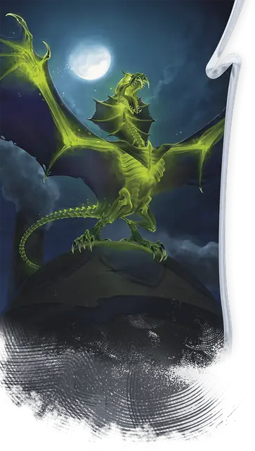

Темнозверь
Darkenbeast
Среднее Чудовище, Нейтральное Злое

Класс Защиты 15 Инициатива +4 (14)
Хиты 60 (8к8 + 24)
Скорость 20 футов, Полёта 40 футов
| мод | спас | ||
|---|---|---|---|
| СИЛ | 17 | +3 | +5 |
| ЛОВ | 14 | +2 | +2 |
| ТЕЛ | 16 | +3 | +3 |
| мод | спас | ||
|---|---|---|---|
| ИНТ | 5 | −3 | −3 |
| МДР | 10 | +0 | +0 |
| ХАР | 13 | +1 | +1 |
Иммунитеты Испуганный
Чувства Тёмное зрение 60 футов, пассивное Восприятие 12
Языки нет
Опасность 4 (1 100 опыта; БВ +2)
Особенности
Отпечаток заклинания. Частью создания темнозверя его создатель может вложить в него одно заклинание с уровнем не выше 5-го и временем сотворения «Действие». Заклинание не производит эффект, а сохраняется в темнозвере. Находясь в пределах 30 футов от темнозверя, его создатель может сотворить сохранённое заклинания, не нуждаясь в компонентах и используя заклинательную характеристику заклинателя. Когда заклинание сотворяется таким образом, источником его эффекта становится темнозверь (как если бы темнозверь был заклинателем); сразу же после того как заклинание сотворено, темнозверь умирает во вспышке пурпурного пламени.
Чувствительность к солнечному свету. Находясь на солнечном свету, темнозверь совершает с Помехой проверки характеристик и броски атаки.
Действия
Мультиатака. Темнозверь совершает три атаки Раздиранием.
Раздирание. Бросок рукопашной атаки: +5, досягаемость 5 фт. Попадание: 12 (2к8 + 3) Рубящего урона.
Бонусные действия
Теневой охотник. Темнозверь совершает действие Затаивание или Отход, если находится в области Тусклого света или Темноты.
Бонус мастерства +2
Среда обитания Город, Луга, Холмы
Сокровища Отсутствуют
Темнозверь
Преобразованный крылатый прислужник зла
Темнозвери — свирепые звероподобные охотники, создаваемые из обычных животных злыми заклинателями. Независимо от исходной формы, магия ритуала превращает их в клыкастых чудовищ с кожистыми крыльями. Кости большинства темнозверей просвечивают сквозь кожу; в ночном небе эти твари напоминают жутких летающих скелетов. Темнозверь предан своим создателям, которые могут извлечь магию, использованную для его превращения, в эффектном действе — смертельном, однако, для самого темнозверя.
У темнозверей могут сохраняться рудиментарные черты животных, которыми они были до превращения. Совершите бросок по таблице «Происхождение темнозверя» для вдохновения или выберите сами его косметические особенности.
Происхождение темнозверя
| к6 | Темнозверь когда-то был… |
| 1 | Коброй, поэтому у него кожистый капюшон и чешуйчатая кожа. |
| 2 | Лисой, что даёт ему рыжеватый мех и лисьи черты. |
| 3 | Пантерой, поэтому у него острые когти и пронзительный крик. |
| 4 | Кроликом, что даёт ему длинные уши и пугливый нрав. |
| 5 | Черепахой, что даёт ему тупую морду и панциреобразный покров. |
| 6 | Волком, поэтому он издаёт жуткий вой. |